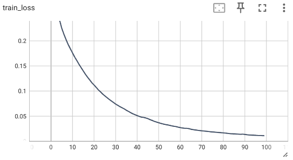
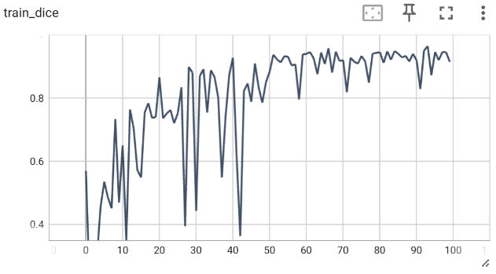
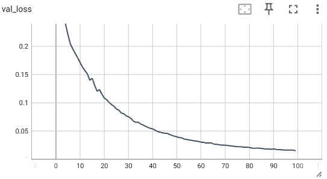
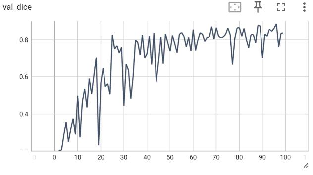
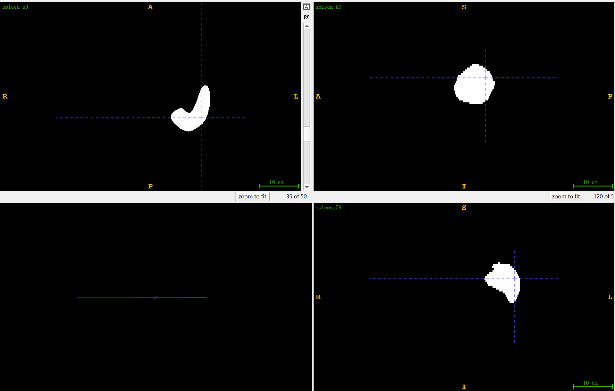
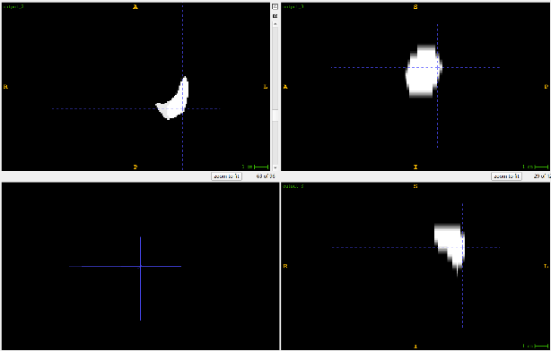
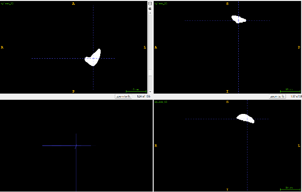
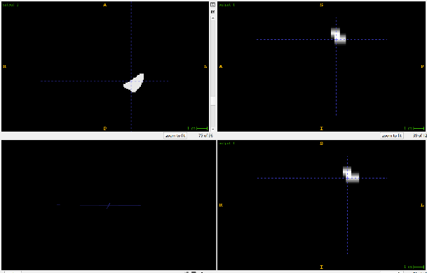

Medical imaging experiments
I trained two vision models in PyTorch on a remote GPU: a classifier for skin lesions and a segmentation model for the spleen in CT.
Skin lesion classification
The task is binary classification of skin lesions as benign or malignant, using the ISIC 2016 collection: 900 training images and 379 test images. I fine-tuned an ImageNet-pretrained ResNet-50, replacing the final layer with a single logit and a sigmoid. Training used Adam and binary cross-entropy, with a decision threshold of 0.5. The set contains substantially more malignant images than benign ones, so a weighted sampler balanced the two classes. Training accuracy was about 90%, and test accuracy about 80%.
Spleen CT segmentation
The task is to label spleen voxels in a 3D CT volume. I trained a 3D U-Net with four downsampling stages and four upsampling stages: max pooling on the encoder path, transposed convolution on the decoder path, and skip connections between matching levels. Volumes were resized to 128×128×16. Training loss settled near 0.01 and held-out loss near 0.02. Dice was about 90% on the training volumes and about 80% on the held-out set.




Two of the four NIfTI volumes inspected in ITK-SNAP are shown below. The predicted mask follows the spleen and is less sharply bounded than the ground truth.



